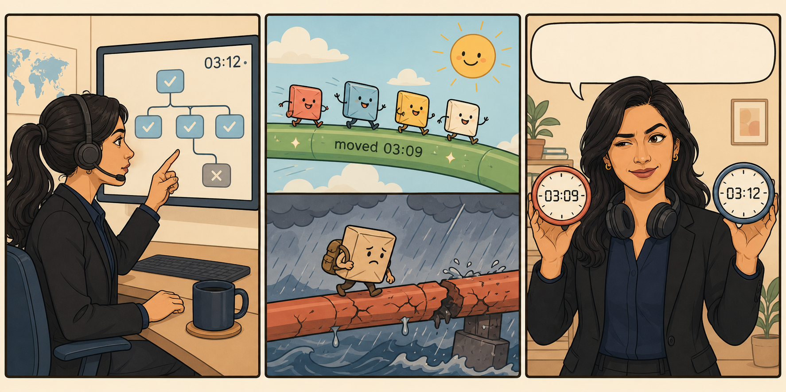
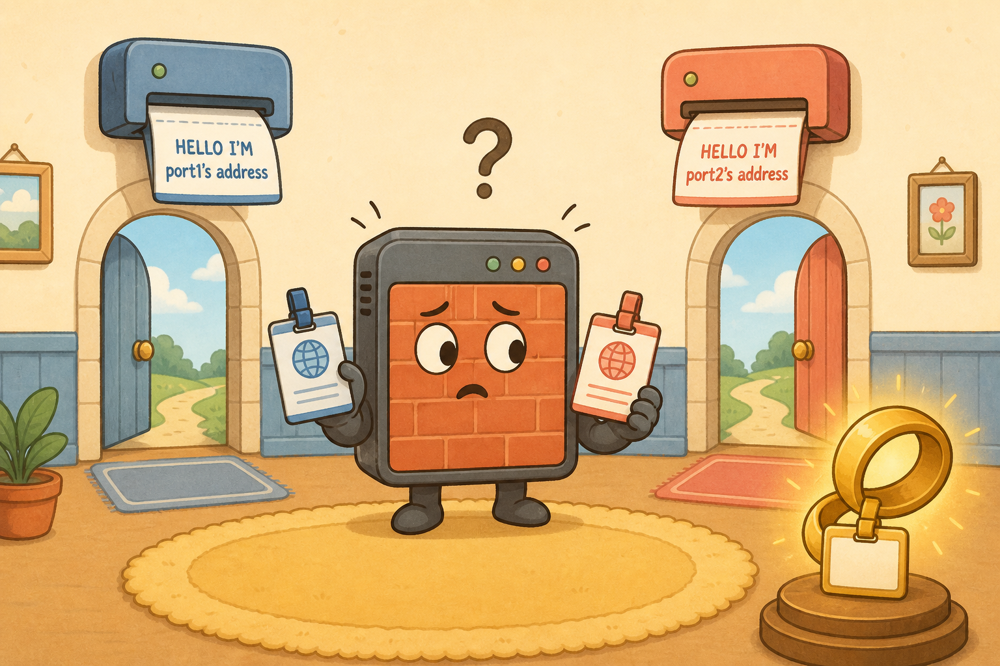
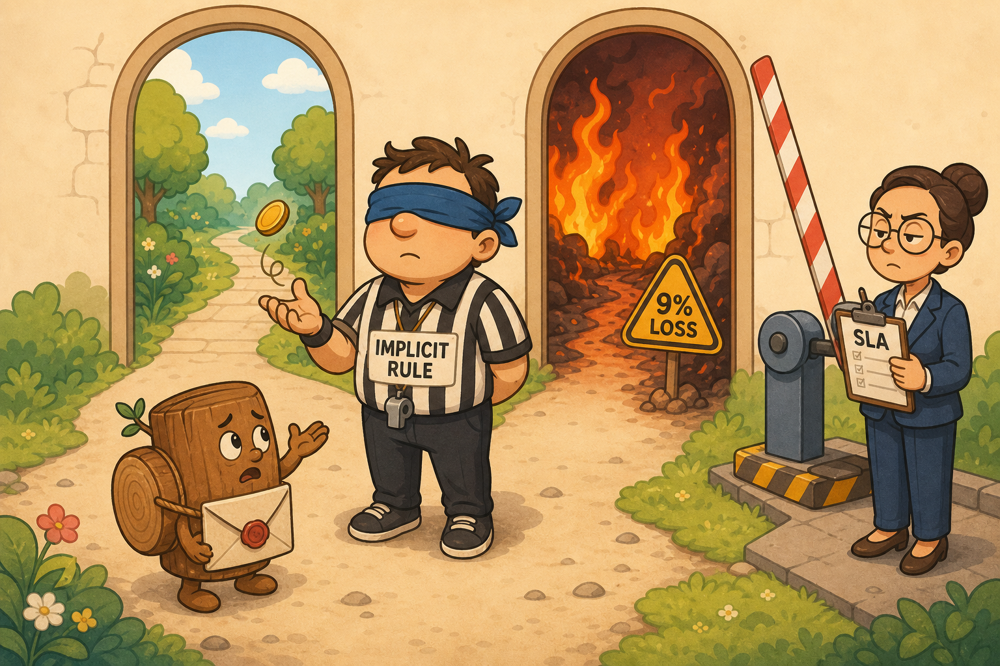

The FIB Has No Thermometer
In which the device and its users disagree about the same link, and both are right.

The first thing to see is that two different deciders were at work on one box. The users' sessions were transit traffic — in one interface, out another — so they got the full treatment: SD-WAN rules, health checks, SLA targets, the lot. When ISP1 went to four hundred milliseconds and nine percent loss, SD-WAN judged it, found it wanting, and moved everyone at 03:09.
But the syslog messages, the FortiGuard updates — that traffic is local-out: traffic the FortiGate originates itself. And local-out doesn't consult SD-WAN by default. It does a plain FIB lookup: what does the routing table say for this destination? Interface, next hop, done.
Here's the rub. The routing table knows a route's prefix, egress interface, and next hop — and nothing else. It has no latency column. No loss column. No SLA. The FIB stores facts, and SD-WAN's entire job is to bolt a quality layer on top of a table that cannot express quality. Local-out traffic reading the FIB directly reads it without that layer.
And a degraded member doesn't lose its route. Out-of-SLA is not dead. Perth's ISP1 stayed alive at nine percent loss, so its route stayed installed, so local-out kept using it — until the log connection finally gave up at 03:12.
"It knows the interface and next hop for a prefix. It doesn't know the quality of the path." — Samwise, nailing the whole episode in one sentence
Local-out reads the FIB. The FIB has no quality dimension. That's why the device and its users can disagree — they're asking two different deciders about the same link. Up is a fact; good is a measurement; the FIB only stores facts.
"SD-WAN moved the users, so the device is fine too." No — SD-WAN steering applies to transit traffic. The FortiGate's own logs, updates, DNS and NTP take the plain routing-table path unless each daemon is told otherwise. A degraded-but-alive member keeps its route, and local-out keeps walking through the bad door.
The Door and the Name
In which the device has been introducing itself differently depending on which exit it took.

Fixing the path opened a second problem. When a FortiGate sends its own traffic, no firewall policy is consulted — so nothing NATs it. The source address defaults to the primary IP of whichever interface the packet leaves by. Change the egress, and the source address changes with it.
Aisha found the fortnight of evidence: Perth's log records carried two different source addresses, switching whenever the path moved. FortiAnalyzer had been treating part of the estate's own log stream as an unregistered device. The box looked like a committee.
Two settings, two jobs, both needed:
set interface-select-method chooses the path — auto (default: plain FIB), sdwan (follow the SD-WAN rules), or specify (pin one interface). set source-ip chooses the identity. They are independent — and steering without pinning actually makes the identity problem worse, because the path now changes more often.
The right identity in this estate is the loopback. A member interface address is path-dependent — the very thing causing the trouble. A loopback is never down, belongs to no path, and the loopback pool is already advertised estate-wide for BGP peering. One permanent name per device, whichever door the packet uses.
config log fortianalyzer setting
set interface-select-method sdwan # the door: follow SD-WAN rules
set source-ip 10.255.1.6 # the name: this device's loopback
end
# same pair exists per daemon: fortiguard, dns, ntp, central-management,
# radius, ldap, alertemail, syslogd — there is no single global switch
interface-select-method = which door. source-ip = what name. Two independent settings, both usually needed, configured per daemon. Pin the name to the loopback — it's path-independent, never down, and already reachable.
Two of them. First: local-in policy cannot set a source address — it's an inbound admission control; source selection for outgoing device traffic is source-ip. Second: there is no single switch that makes a FortiGate SD-WAN-aware about its own traffic — the setting lives separately in each originating daemon's configuration.
Permission Isn't Steering
In which the fix, applied alone, trades a bad certainty for a coin flip that never re-flips.

Aisha spotted the trap in the fix before it shipped: "You've told the log daemon to use SD-WAN rules. What rule is my syslog going to match?" With interface-select-method sdwan set and no explicit rule matching the log traffic, it falls to the implicit rule — which load-balances by source-IP hash across all members holding a valid route, and is blind to SLA.
Both of Perth's ports were alive at 03:07. So the implicit rule would happily have used either — and since local-out traffic has one source address, the hash barely varies: in practice it pins to one member and stays there. Before the change, the logs went deterministically out the bad port. After the change alone, they go out a random port and never reconsider. Not better.
The setting is only permission to be steered. The steering has to be written: an explicit rule matching on destination (the FortiAnalyzer address, UDP/514 — destination-based, because the source here is the device's own address), with strategy lowest cost (SLA). That strategy is the special one: the SLA acts as an admission bar, not a ranking. Members must pass the targets to be eligible at all; among those that pass, lowest cost wins. At nine percent loss, the bad member met nothing — ineligible — and the logs finally get the same 03:09 decision the users got.
One last boundary, because the exam loves it: interface-select-method exists for service daemons only. Health-check probes are bound to the member they measure — a steerable probe would only ever take its own temperature. IPsec is bound to its phase1 interface at build time. BGP does an ordinary FIB lookup from its update-source. The setting doesn't reach any of them.
"So the thermometer doesn't get a vote on where it goes. Bloody oath, mate — otherwise it'd only ever take its own temperature." — Racks, on why probes can't be steered
| Strategy | An alive-but-degraded member is… |
|---|---|
| Manual | Used. Only checks alive. |
| Best quality | Avoided — but the choice chases the metric constantly. |
| Lowest cost (SLA) | Ineligible. Must pass the SLA targets to be considered at all. |
| Load balance | Used. Blind to SLA. |
Permission isn't steering. Setting sdwan without writing a matching rule drops you on the implicit rule, which is SLA-blind. Write the rule: match the destination, strategy lowest cost (SLA) — the only strategy where SLA is an admission bar rather than a ranking.
The health-check history told the whole story: the bad member at 384 ms / 9.4% loss with sla_map 0x0 (met nothing) yet state: alive, while the good member sat at 18 ms with sla_map 0x3. Alive kept the route installed for local-out; 0x0 is what makes the member ineligible under lowest cost (SLA).
The Flip-Card Wall
Answer out loud before you flip. A correct answer after peeking doesn't count — house rules.
A plain FIB lookup on the destination. No policy route match, no SD-WAN rule, no member eligibility test. The routing table knows prefix, egress and next hop — it has no quality dimension, so a degraded-but-alive member's route stays installed and keeps being used.
Nothing. Out-of-SLA is not dead. The route is withdrawn only if the member is declared dead and something is configured to withdraw it. There is no quality threshold anywhere in the FIB chain — which is exactly why local-out traffic keeps using a degraded link.
The primary IP of the egress interface the FIB chose. No firewall policy is consulted for local-out, so nothing NATs it. Change the egress and the source address changes with it — which is why steering without pinning makes the identity problem worse.
It's path-independent and never down. A member interface address changes with the path — the very problem being fixed. The loopback belongs to no path, survives any single interface failure, and (in this estate) is already advertised everywhere. One permanent identity per device.
Per originating daemon, separately. FortiAnalyzer logging, FortiGuard, DNS, NTP, central-management, RADIUS, LDAP, alertemail, syslogd — each has its own. It is not under config system sdwan and there is no single global switch.
The implicit rule — and it's SLA-blind. It hashes across all members holding a valid route, alive or degraded alike. With one source address the hash barely varies, so the traffic pins to one member and never reconsiders. The setting is permission; a written rule is the steering.
Lowest cost (SLA). It's the only strategy where the SLA targets act as an admission bar rather than a ranking: members must pass to be considered at all, then lowest cost wins among the passers. Manual and load balance only check alive; best quality ranks but chases the metric.
None of them. Probes are bound to the member they measure — a steerable probe would measure the wrong thing. IPsec is bound to its phase1 interface at build time. BGP does an ordinary FIB lookup from its update-source. The setting exists for service daemons only.
No. Local-in is inbound: traffic arriving at and terminating on the FortiGate. It's an admission control — permit, deny, log. Device-originated traffic is local-out, and its source address is set with source-ip per daemon, or defaults to the egress interface's primary IP.
The Field Guide — The Three Rules on One Page
The compressed version. Everything else in the episode was a consequence of these.
config log fortianalyzer setting
set interface-select-method sdwan # auto | sdwan | specify
set source-ip <loopback> # pin the identity
end
# same pair per daemon: system fortiguard, system dns, system ntp,
# system central-management, user radius, user ldap,
# alertemail setting, log syslogd setting
interface-select-method values
| Value | Behaviour | Source address (if no source-ip) |
|---|---|---|
| auto (default) | Plain FIB lookup | Egress interface primary IP |
| sdwan | Consult SD-WAN rules for the destination | Changes with whichever member is chosen |
| specify | Pin to one interface (requires set interface) | That interface's primary IP |
Local-out traffic — who decides the path
| Traffic | Reached by interface-select-method? | Path decided by |
|---|---|---|
| Logging, FortiGuard, DNS, NTP, RADIUS, LDAP, alert email, central management | Yes | FIB by default; SD-WAN rules if set to sdwan |
| SD-WAN health-check probes | No | Bound to the member being probed |
| IPsec / IKE negotiation | No | Bound to the phase1 interface at build time |
| BGP | No | FIB lookup; sourced from update-source |